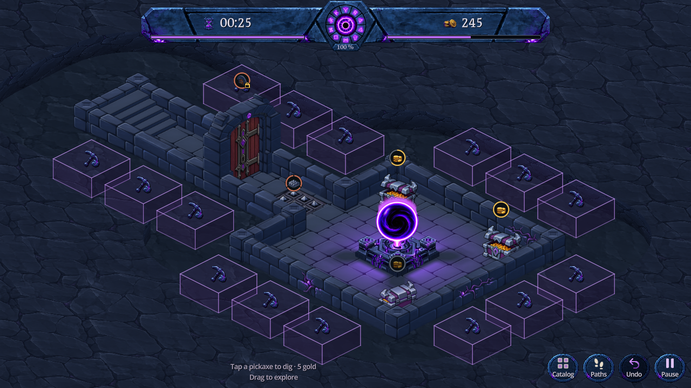
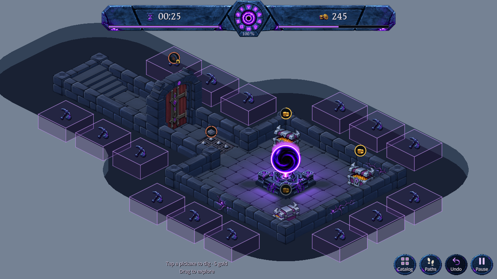

La pente diffuse est remplacée par une coupe franche : un plateau de roche à la hauteur des murs, sa tranche verticale et un fond plat au niveau des dalles. Cette séparation rend l’excavation visible autour des constructions.
Le bord de la coupe et la paroi partagent exactement le même contour. La largeur du dégagement reste de 1,35 case ; les cubes, leurs icônes et leur placement sont conservés. Version active dans DigBlocksPreview.

Capture Godot · 1280 × 720 · Coupe franche
Cette capture utilise la vraie géométrie de la scène. Le gris clair représente la roche supérieure, le gris intermédiaire sa tranche et le bleu sombre le fond excavé. Le terrain extérieur ne dépasse pas les murs.

30 contrôles : hauteur des parois, continuité des jonctions, bord partagé avec la roche supérieure, cases dégagées, creusement réel et annulation exacte. Cas isolé, angle rentrant, zones séparées, îlot de roche, carte vide et donjon d’essai. Le test initial échouait sur l’absence de coupe verticale dans la version en pente.
14 contrôles visuels vérifient que les faces basses ne passent pas par-dessus la roche supérieure. La caméra portrait est déplacée vers une zone d’occultation réellement identifiée ; les arrondis créent moins de recouvrements que l’ancien contour en marches. Échantillonnage de chaque pixel dans ces petites zones, hors franges de filtrage.
337 contrôles d’interaction, 12 974 contrôles de cubes et transactions (24 creusements puis 24 annulations), et 7 contrôles de maçonnerie passent. Sorties d’erreur vides ; captures bureau, paysage et portrait inspectées. Ces vérifications ne valident pas toutes les cartes possibles ni les performances sur téléphone physique.
Reproduction : godot --path . --script res://tools/verify_excavated_recess.gd et godot --path . --script res://tools/verify_terrain_recess.gd -- --cut. Ajouter --topology pour la capture sans texture. Les autres fixtures sont capture_dig_blocks.gd, verify_dig_clearance.gd et verify_dig_block_spacing.gd (headless).
Les anciennes peintures sont réutilisées ; aucun nouveau sprite. La géométrie se reconstruit lors d’un changement d’occupation, pas à chaque image. La version en pente reste reproductible avec sloped_recess=true dans sa fixture historique. Aucun accès aux sauvegardes joueur, APK, commit ou push. Nouveau relief limité à l’aperçu ; jeu principal inchangé durant cette itération. 31 octobre 2026.